S08「AI 與人：8 萬人的真心話」— 8 張配圖 v1 vs v2 比對
升級方法：攝影機+鏡頭規格 / 膠片模擬+調色LUT / 物理光學細節 / 導演風格引用
ARRI Alexa 65 / RED V-Raptor + Panavision Ultra Vista / Cooke S7/i — 指定焦距、光圈 T-stop、景深特性
Kodak Vision3 500T / Fujifilm Eterna / Ektachrome — 指定 push/pull stops、色調偏移、grain 特性
Tyndall 散射、焦散光紋 (caustics)、色散 (chromatic aberration)、anamorphic 橢圓散景、體積光粒子
指定物體表面特性 — 銅鍋反射率、棉布織紋、混凝土骨材紋理、雨滴表面張力
Roger Deakins + Emmanuel Lubezki + Wong Kar-wai — 每張指定 2-3 個風格交叉引用
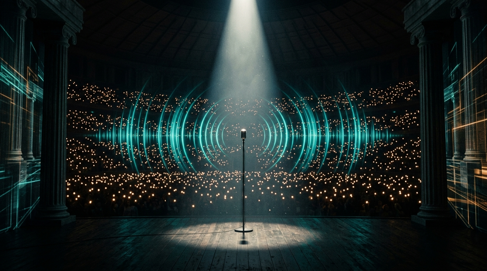
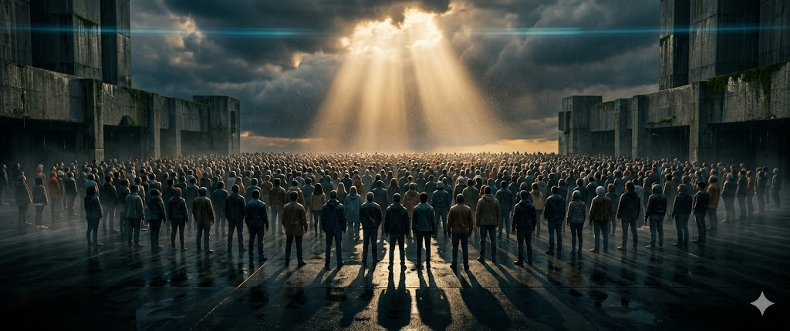
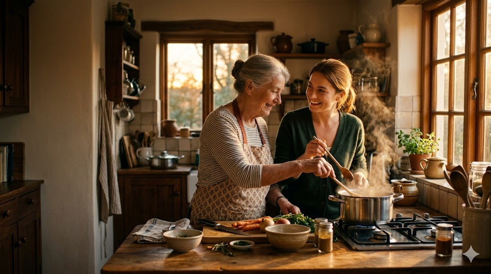
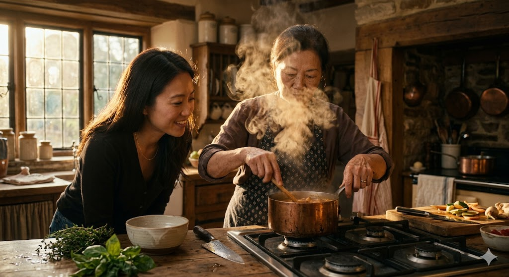
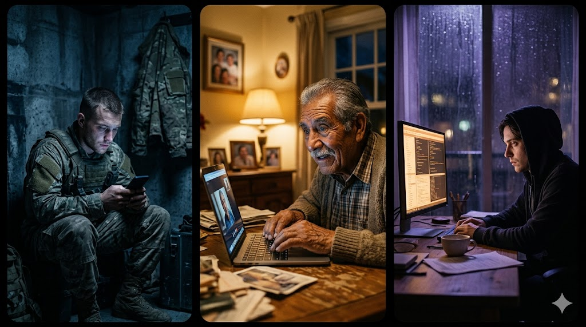
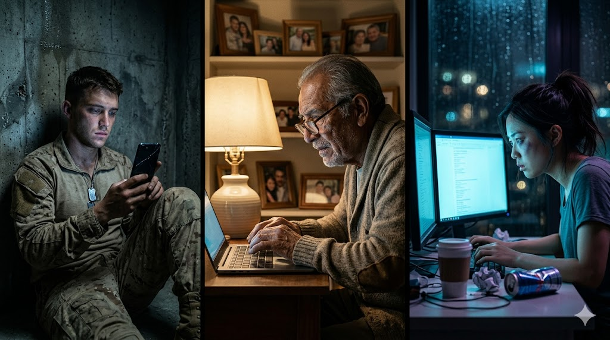
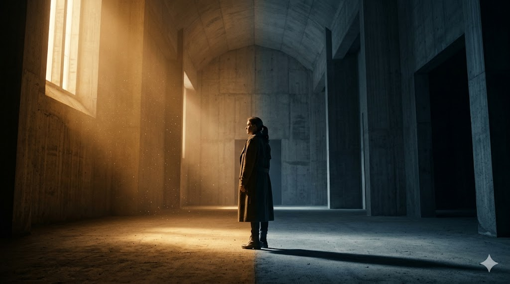
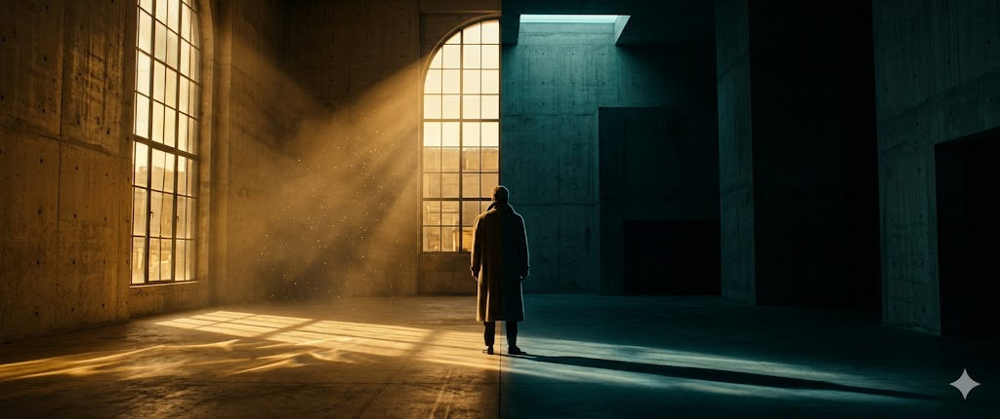
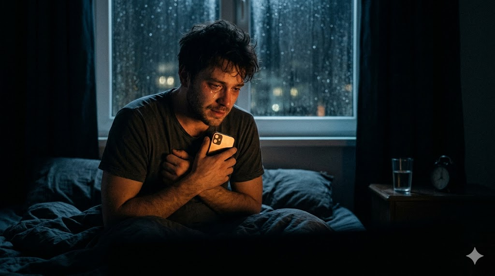
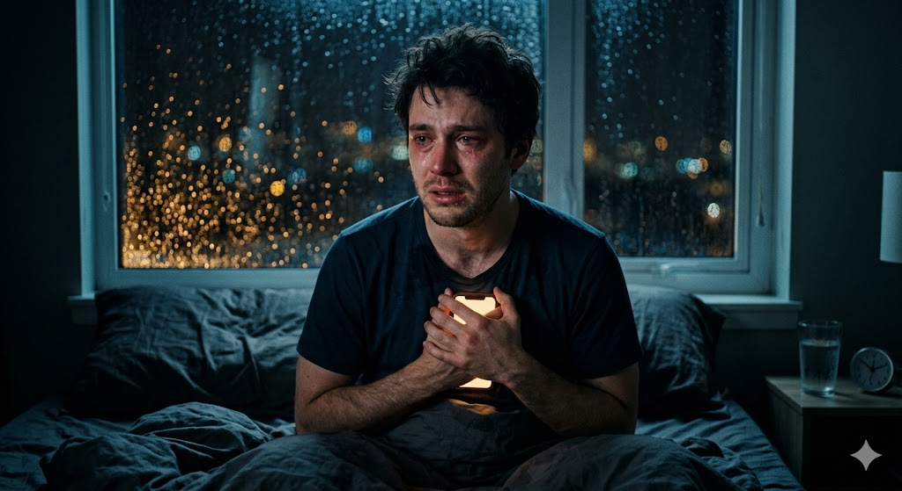
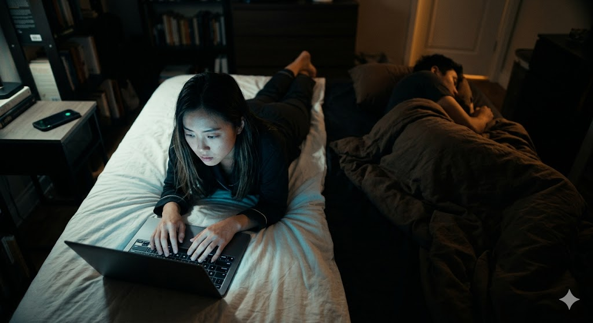
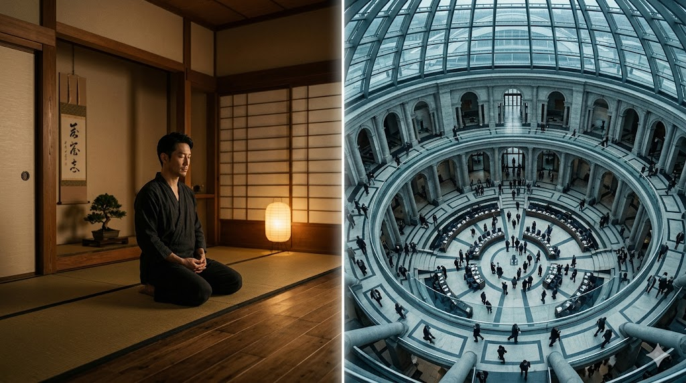
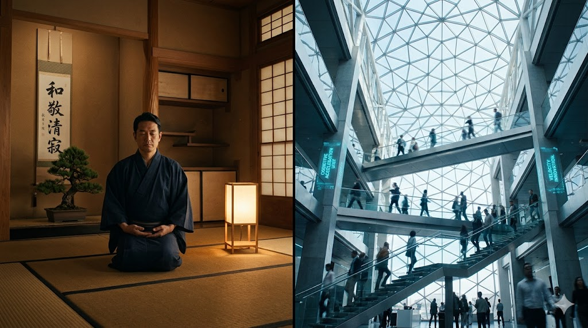
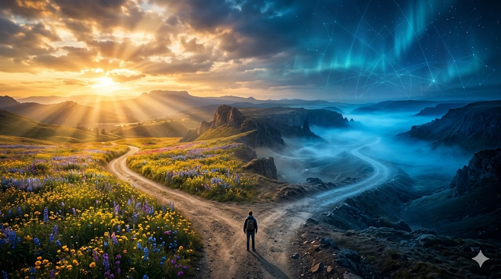
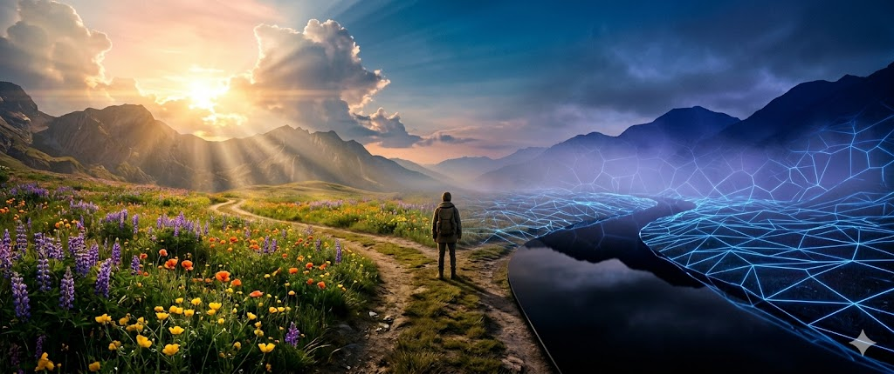
每格左邊 = v1（基礎 prompt），右邊 = v2（電影海報級 prompt）
v1 告訴 AI「拍什麼」— v2 告訴 AI「怎麼拍」
鏡頭、膠片、光學物理、材質描述、導演引用
每一層都在壓縮 AI 的自由度，把它推向電影級品質